O01 / 시작하기
O01 / 시작하기가치 소개
문제를 공감하고 첫 설정으로 이동한다.
주 행동 내 취침 약속 만들기 → O02
예외 소개 건너뛰기는 시간 설정으로 이동. 계정이 없어도 기능 사용 가능.
완료 조건 CTA 한 번으로 설정 시작. 계정이나 결제 화면이 끼어들지 않음.
취침 전 디지털 사용을 끝내고
스스로 정한 시간을 지키도록 돕는 제품 설계


O01 가치 소개
O02 취침 방해 원인
O03 취침과 해제 시각
O04 제한 앱 선택
O05 권한 준비
O06 접근성 별도 고지
O07 시스템 설정 안내
O08 10초 제한 테스트
O09 첫 준비 완료
O10 제한 테스트 실패
A01 로그인 선택
A02 이메일 로그인
A03 이메일 가입
A04 비밀번호 재설정
A05 기록 병합
A06 재설정 안내 전송
A07 이메일 확인
H01 오늘 준비 완료
H02 준비 필요
H03 오늘만 변경
H04 마무리 안내
H05 한 번 미루기
H06 시작 확인 중
H07 제한 시작 실패
N01 사용 제한 중
N02 잠깐 앱 사용
N03 긴급 접근
N04 조기 종료 확인
N05 일부 기기 미확인
N06 아침 결과
N07 임시 사용 진행
N08 임시 사용 복귀 실패
R01 루틴 목록
R02 루틴 편집
R03 항상 허용 앱
R04 제한 방식
R05 알림 설정
R06 일정 겹침
R07 주말 루틴 편집
R08 새 루틴 만들기
R09 추가 루틴 관리
R10 추가 루틴 삭제
무료는 한 기기의 기본 루틴·선택 앱 제한·예외 접근·원본 기록을 제공합니다. Plus는 지원 기기 연동·복수 루틴·장기 비교·조정 계획을 제공합니다.
시안은 사용 흐름과 구현 기준을 검토하기 위한 제안입니다. 실제 인증·잠금·결제·문의·삭제는 실행하지 않습니다. 화면 내용은 세로 스크롤될 수 있으며 아래에는 주요 상태와 구현 완료 조건을 함께 기록했습니다. OS 결제와 권한 화면은 실제 시스템 UI를 사용합니다.
D01 연결 기기
D02 기기 추가
D03 연결 코드
D04 기기 상세
D05 연결 해제 확인
D06 연결 승인 대기
D07 연결 코드 오류
D08 연결 완료와 준비
D09 지원하지 않는 기기
S01 기록 요약
S02 하루 기록 상세
S03 기록 없음
S04 주간 비교
S05 7일 조정 계획
S06 분석 기록 부족
S07 기록 조회 실패
S08 관찰 공백과 기존 기록
M01 마이페이지
M02 프로필
M03 계정과 보안
M04 문의와 도움말
M05 개인정보와 데이터
M06 계정 삭제
M07 기록 내보내기
M08 문의 접수
M09 게스트 마이페이지
M10 Plus 마이페이지
M11 내보내기 파일 준비 완료
M12 로그아웃 확인
M13 계정 삭제 처리 중
M14 계정 삭제 완료
M15 약관과 개인정보 안내
M16 문의 전송 실패
P01 Plus 가치
P02 요금제 선택
P03 스토어 결제 맥락
P04 구매 성공
P05 구독 관리
P06 해지 예정
P07 구독 만료
P08 구매 확인과 복원
P09 가격 조회 실패
P10 체험 자격 없음
P11 무료 체험 이용 중
P12 결제 보류와 유예
P13 복원할 구매 없음
P14 구매 검증 중
X01 연결 끊김
X02 권한 철회와 중단
X03 iOS 허용과 지원
X04 로그인 실패
무료는 한 기기의 기본 루틴·선택 앱 제한·예외 접근·원본 기록을 제공합니다. Plus는 지원 기기 연동·복수 루틴·장기 비교·조정 계획을 제공합니다.
시안은 사용 흐름과 구현 기준을 검토하기 위한 제안입니다. 실제 인증·잠금·결제·문의·삭제는 실행하지 않습니다. 화면 내용은 세로 스크롤될 수 있으며 아래에는 주요 상태와 구현 완료 조건을 함께 기록했습니다. OS 결제와 권한 화면은 실제 시스템 UI를 사용합니다.
O01 / 시작하기문제를 공감하고 첫 설정으로 이동한다.
주 행동 내 취침 약속 만들기 → O02
예외 소개 건너뛰기는 시간 설정으로 이동. 계정이 없어도 기능 사용 가능.
완료 조건 CTA 한 번으로 설정 시작. 계정이나 결제 화면이 끼어들지 않음.
 O02 / 시작하기
O02 / 시작하기가장 자주 겪는 상황을 골라주세요. 최대 2개예요.
주 행동 다음 → O03
예외 선택 없이 건너뛰기 가능. 최대 2개. 질문은 제한 앱을 자동 선택하지 않음.
완료 조건 선택 변경 가능, 시간 설정의 기본 루틴은 동일하게 제공.
 O03 / 시작하기
O03 / 시작하기시간이 되면 선택한 앱 사용을 제한해요.
주 행동 이 시간으로 계속 → O04
예외 같은 시작·해제 시각은 저장 금지. 이미 지난 시작은 적용 날짜 확인.
완료 조건 시각과 요일을 확인해 저장, 다음 날 해제 표시.
 O04 / 시작하기
O04 / 시작하기필요한 앱은 계속 사용할 수 있어요.
주 행동 선택한 앱 제한하기 → O05
예외 앱 0개이면 다음 버튼 대신 선택 안내. 허용 목록 충돌은 허용 우선.
완료 조건 선택한 목록이 실제 제한 대상과 일치.
 O05 / 시작하기
O05 / 시작하기앱 사용을 제한하려면 이 기기의 허용이 필요해요.
주 행동 앱 실행 감지 설정 → O06
예외 필요와 권장 구분. 시스템 설정 복귀 시 실제 상태 조회.
완료 조건 권한 부재가 기록·루틴 탐색을 막지 않음.
 O06 / 시작하기
O06 / 시작하기정보 접근 목적과 처리 범위를 별도로 설명하고 명시적 동의를 받는다.
주 행동 동의하고 설정으로 → O07
예외 동의 거절·철회 가능. 실제 출시 전 구현과 고지의 일치 필수.
완료 조건 일반 약관 동의와 분리. 설정 이동 전 명시적 동의.
 O07 / 시작하기
O07 / 시작하기허용을 마치면 상태를 다시 확인해요.
주 행동 허용 상태 확인하기 → O08
예외 시스템 설정 경로는 OS와 제조사별로 다름. 허용 미완료는 H02.
완료 조건 복귀 시 상태 재조회, 미완료인 항목만 표시.
 O08 / 시작하기
O08 / 시작하기10초 동안 테스트한 뒤 자동으로 해제해요.
주 행동 10초 제한 테스트 → O09
예외 테스트 시작 실패·해제 미확인·서비스 중단은 준비 완료 금지.
완료 조건 실제 시작과 해제를 모두 확인한 경우만 완료.
 O09 / 시작하기
O09 / 시작하기23:30에 선택한 앱 사용을 제한할게요.
주 행동 오늘 화면으로 → H01
예외 확인된 준비 항목만 완료. 자동 예약 실패 시 준비 필요 경로.
완료 조건 오늘 적용 시각·대상·예약 상태를 홈에서 확인 가능.
 O10 / 시작하기
O10 / 시작하기첫 실행의 실제 성공 여부를 알려준다.
주 행동 허용 상태 확인 → O05
예외 권한 허용과 엔진 작동은 별도 확인. 실패 원인별 안내.
완료 조건 실기기 성공 응답 뒤만 O09로 이동.
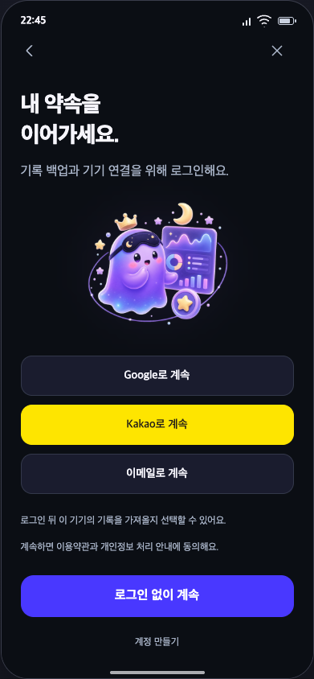
A01 / 로그인계정의 이유를 설명하고 인증 방법을 제공한다.
주 행동 로그인 없이 계속 → H01
예외 Google·Kakao는 네이티브 인증. 실패·취소 후 게스트 유지. iOS 출시 시 Apple 로그인 요건 별도 검토.
완료 조건 로컬 기록과 계정 소유권을 유지, 비로그인 경로 명확.
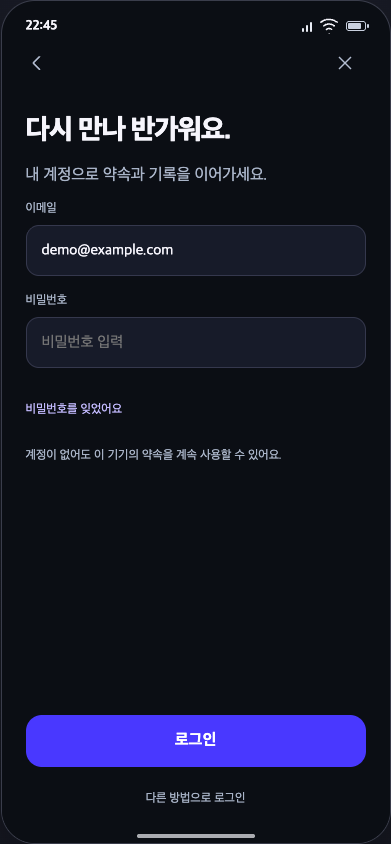
A02 / 로그인내 계정으로 약속과 기록을 이어가세요.
주 행동 로그인 → A05
예외 필드 오류는 아래 표시, 네트워크 실패 시 입력 보존, 계정 존재를 과도하게 노출하지 않음.
완료 조건 유효성 검사·로딩·실패·취소 상태. 실제 인증 후만 완료.
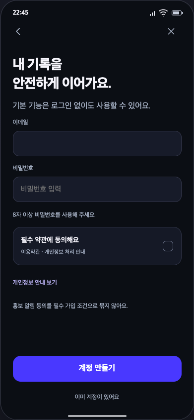
A03 / 로그인기본 기능은 로그인 없이도 사용할 수 있어요.
주 행동 계정 만들기 → A07
예외 필수 약관 미동의 시 가입 실행 금지. 중복 이메일·검증 이메일·인증 서비스 오류 별도.
완료 조건 소셜 가입과 이메일 가입 후 같은 병합 규칙 적용.
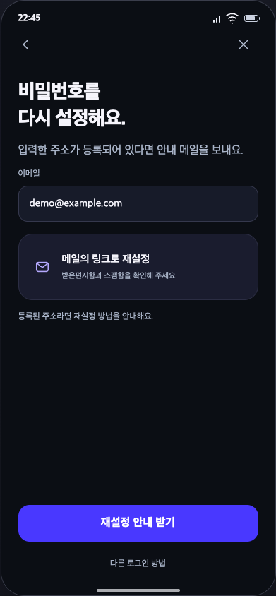
A04 / 로그인입력한 주소가 등록되어 있다면 안내 메일을 보내요.
주 행동 재설정 안내 받기 → A06
예외 메일 전송 요청과 완료 구분. 재요청 속도 제한. 계정 존재 여부를 단정하지 않음.
완료 조건 제출 후 중립적인 안내, 입력 오류는 필드에 표시.
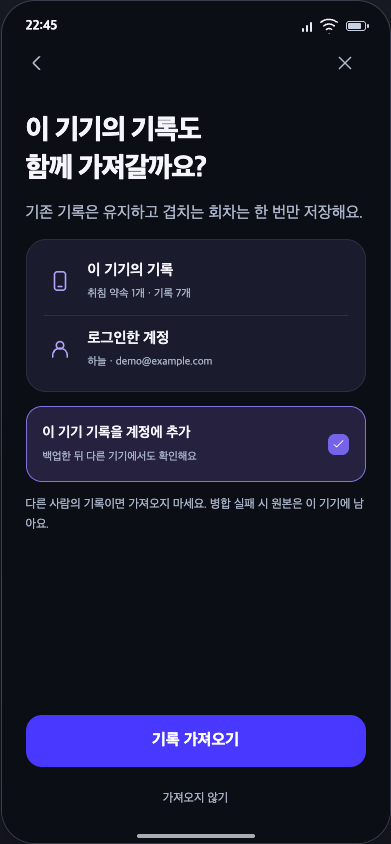
A05 / 로그인로컬과 계정 데이터의 소유권을 확인하고 병합 선택을 받는다.
주 행동 기록 가져오기 → M01
예외 병합 오류는 로컬 원본 보존. 계정 전환 시 자동 병합 금지.
완료 조건 회차 ID 중복 제거, 일정 충돌은 사용자가 선택.
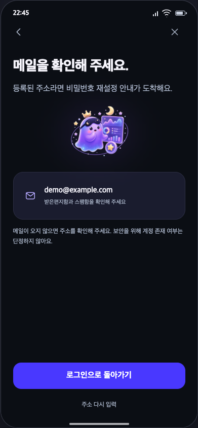
A06 / 로그인중립적인 재설정 제출 결과를 제공한다.
주 행동 로그인으로 돌아가기 → A02
예외 재요청 제한, 메일 서비스 실패 시 전송 완료 단정 금지.
완료 조건 계정 존재 여부를 직접 노출하지 않음.
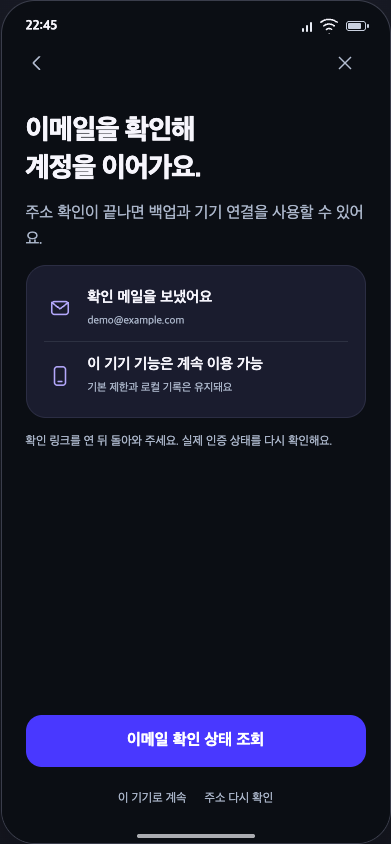
A07 / 로그인클라우드 계정의 이메일 확인을 진행한다.
주 행동 이메일 확인 상태 조회 → A05
예외 미확인 계정의 백업·연동 제한, 재전송 쿨다운, 로컬 사용 유지.
완료 조건 실제 인증 완료 뒤만 A05, 인증 실패는 로컬 원본 보존.
H01 / 오늘오늘 약속·예약·준비 상태와 시작 행동을 한 번에 이해한다.
주 행동 지금 사용 제한 시작 → H06
예외 준비 부족은 H02, 오프라인 X01, 시작 미확인은 N05.
완료 조건 시각·대상·상태가 현재 설정과 일치, 요청 중 중복 탭 방지.
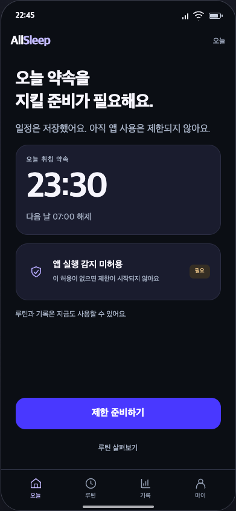
H02 / 오늘일정은 저장했어요. 아직 앱 사용은 제한되지 않아요.
주 행동 제한 준비하기 → O05
예외 권한·서비스·예약 각각 원인 표시. 알림 거절을 전체 제한 불능으로 단정하지 않음.
완료 조건 필요 항목만 요청하고 다른 탭 접근 허용.
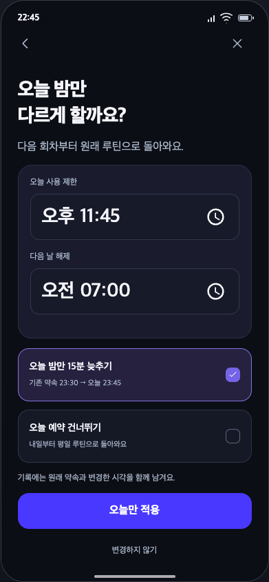
H03 / 오늘다음 회차부터 원래 루틴으로 돌아와요.
주 행동 오늘만 적용 → H01
예외 이미 실행 중이면 일정 변경 대신 해제·종료로 안내. 지난 시간·동일 시각 검증.
완료 조건 기본 루틴 불변, 회차 종료 후 예외 만료.
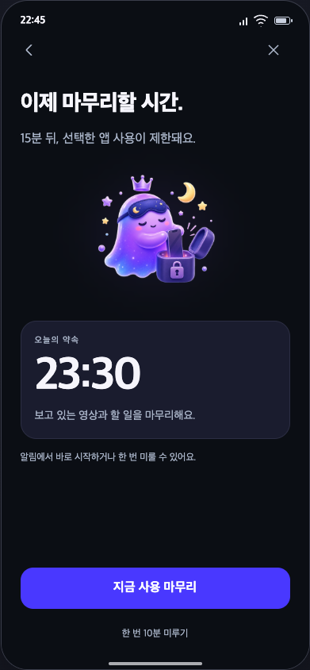
H04 / 오늘15분 뒤, 선택한 앱 사용이 제한돼요.
주 행동 지금 사용 마무리 → H06
예외 알림 미허용·늦게 수신은 실제 남은 시간 재계산. 이미 시작된 회차는 제한 화면.
완료 조건 지금 시작과 미루기 모두 회차 상태와 연결.
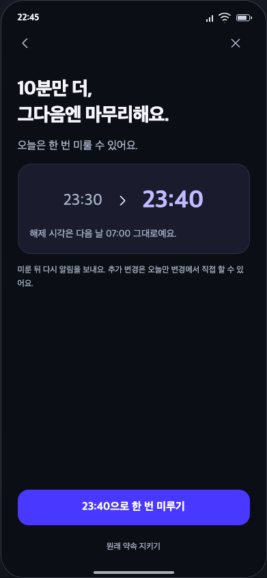
H05 / 오늘오늘은 한 번 미룰 수 있어요.
주 행동 23:40으로 한 번 미루기 → H01
예외 횟수 소진 시 재제안 금지. 연속 탭·서버 중복은 한 회차에 1회 적용.
완료 조건 새 예약 시각과 횟수 저장, 원래 약속 보존.
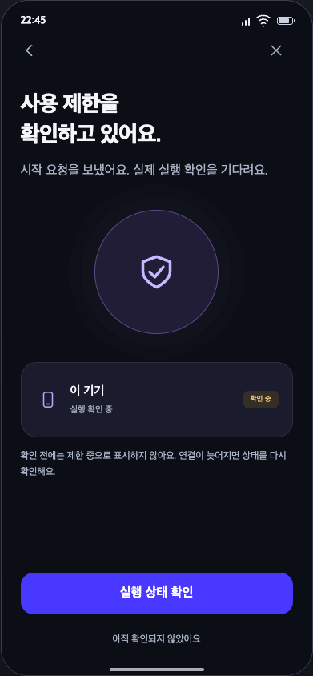
H06 / 오늘시작 요청을 보냈어요. 실제 실행 확인을 기다려요.
주 행동 실행 상태 확인 → N01
예외 3초 확인 중, 10초 지연 안내, 20초 재조회 가설. 미확인 상태에서 무조건 성공 금지.
완료 조건 기기 실행 확인 후에만 제한 화면. 종료 명령이 늦은 시작을 덮음.
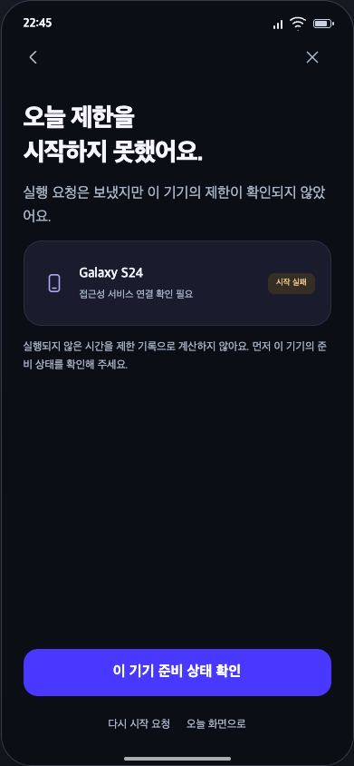
H07 / 오늘완전한 시작 실패를 일부 기기 미확인과 구분한다.
주 행동 이 기기 준비 상태 확인 → O05
예외 부분 성공 N05와 완전 실패 H07 구분. 기존 기록 보존.
완료 조건 실행 확인 없이 N01이나 정시 성공으로 이동하지 않음.
N01 / 밤과 아침밤의 자극을 줄이며 해제 시각과 필요한 접근을 제공한다.
주 행동 잠깐 필요한 앱 사용 → N02
예외 서비스·권한 중단은 X02. 원격 실행 미확인은 N05.
완료 조건 해제·긴급 접근은 화면에 남고 광고·유료 안내 없음.
 N02 / 밤과 아침
N02 / 밤과 아침선택한 앱을 5분 동안 사용할 수 있어요.
주 행동 5분 동안 사용하기 → N07
예외 임시 사용 종료 시 재제한 확인. 실패는 중단·미확인 표시.
완료 조건 선택 앱만 예외, 시간 만료·앱 재시작에도 복귀 규칙 유지.
 N03 / 밤과 아침
N03 / 밤과 아침즉시 필요한 접근과 로컬 해제를 제공한다.
주 행동 이 기기 즉시 해제 → H01
예외 원격 기기 해제는 별도 상태, 로컬 해제는 네트워크·이유 입력 없이 실행.
완료 조건 TalkBack에서도 즉시 실행. 광고·시간 강제 대기·결제 없음.
 N04 / 밤과 아침
N04 / 밤과 아침선택한 앱을 다시 사용할 수 있어요.
주 행동 오늘 제한 끝내기 → N06
예외 종료 요청 중 중복 금지. 이유 미선택도 종료 가능.
완료 조건 해제 확인 후 기록, 실제 종료 유형 정확.
 N05 / 밤과 아침
N05 / 밤과 아침모든 기기가 제한됐다고 확인할 수 없어요.
주 행동 이 기기 제한 계속 → N01
예외 전체 실패와 일부 미확인 구분. 한 기기의 성공이 전체 성공으로 전파되지 않음.
완료 조건 기기별 명령 버전과 확인 시각 표시.
 N06 / 밤과 아침
N06 / 밤과 아침실제 제한 기록과 선택 자기 보고를 연결한다.
주 행동 오늘 약속 확인 → H01
예외 앱을 강제 소환하지 않음. 관찰 공백·긴급·기술 종료 별도 카피.
완료 조건 결과가 기록과 일치. 조기 종료로 진입 시 예정 해제 문구 수정 필요.
 N07 / 밤과 아침
N07 / 밤과 아침허용된 앱과 남은 시간, 재제한 경로를 제공한다.
주 행동 지금 다시 제한 → N01
예외 타이머는 OS 백그라운드에서도 실제 만료 시각 기반. 재제한 실패는 X02.
완료 조건 임시 사용을 제한 유지 시간에서 제외, 재적용 확인 후 N01.
 N08 / 밤과 아침
N08 / 밤과 아침임시 사용 후 재적용 실패를 숨기지 않는다.
주 행동 준비 상태 확인 → O05
예외 계속 실패하면 중단 유지. 재시도 결과 확인 전 성공 문구 금지.
완료 조건 실제 공백 제외, 로컬 해제 독립 제공.
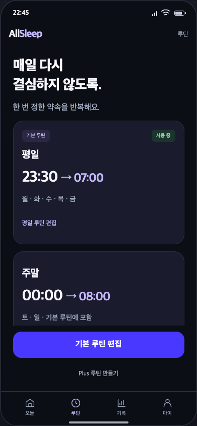
R01 / 루틴한 번 정한 약속을 반복해요.
주 행동 기본 루틴 편집 → R02
예외 비활성·충돌·다음 회차 표시. 기본 평일·주말은 무료.
완료 조건 오늘 홈의 다음 회차와 루틴 계산 일치.
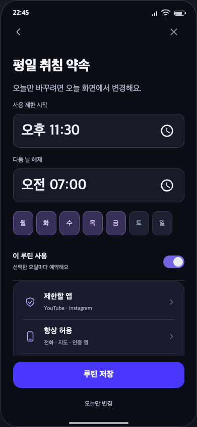
R02 / 루틴오늘만 바꾸려면 오늘 화면에서 변경해요.
주 행동 루틴 저장 → R01
예외 동일 시각·잘못된 범위·겹치는 루틴 검증. 주말 편집 맥락 별도 표시.
완료 조건 저장 결과와 예약 확인 분리, 실패 시 입력 보존.
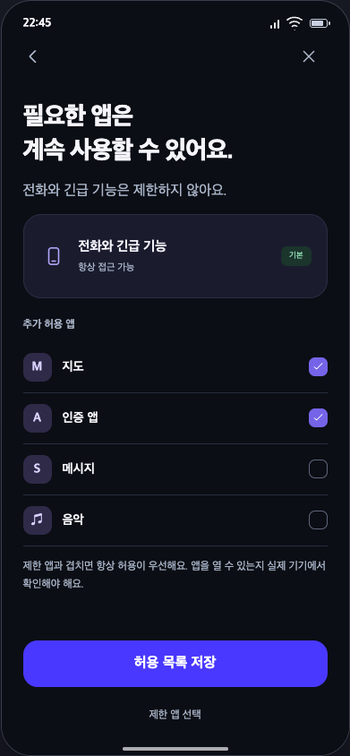
R03 / 루틴전화와 긴급 기능은 제한하지 않아요.
주 행동 허용 목록 저장 → R01
예외 충돌은 저장 전 알려주고 허용 우선. 실제 앱 실행·오버레이 예외 일치.
완료 조건 전화·긴급 기능과 인증 시나리오 실기기 확인.
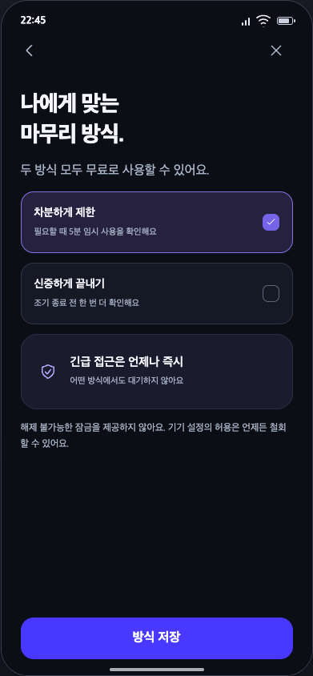
R04 / 루틴두 방식 모두 무료로 사용할 수 있어요.
주 행동 방식 저장 → R01
예외 모션·드래그만으로 종료하지 않음. 확인 대체 조작 제공.
완료 조건 긴급 경로 동일, 일반 종료 확인만 다름.
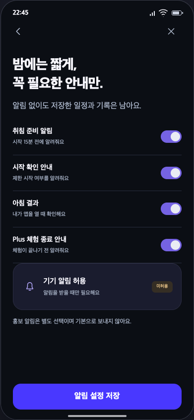
R05 / 루틴알림 없이도 저장한 일정과 기록은 남아요.
주 행동 알림 설정 저장 → M01
예외 기기 권한 거절은 권한 상태 표시. 체험 안내 수신을 보장하지 않음.
완료 조건 선택 저장과 실제 권한 구분, 밤에 홍보 없음.
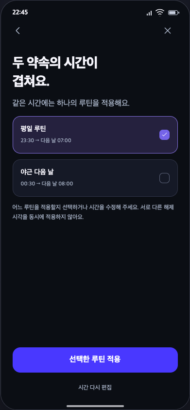
R06 / 루틴동일 회차의 루틴 충돌을 명확히 해소한다.
주 행동 선택한 루틴 적용 → R01
예외 암묵적 우선순위나 최근 저장 루틴 자동 덮어쓰기 금지.
완료 조건 충돌 대상·실제 다음 시각 표시, 선택 저장.
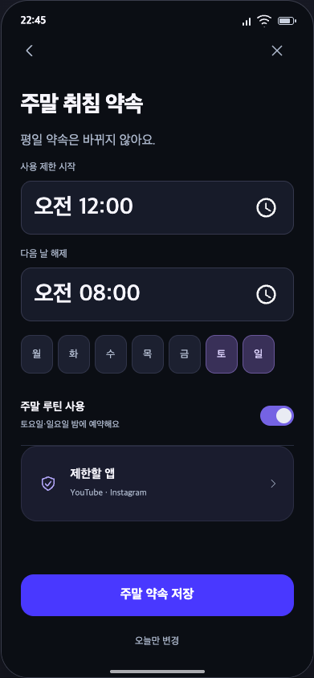
R07 / 루틴주말 시간과 편집 대상을 명확히 구분한다.
주 행동 주말 약속 저장 → R01
예외 현재 회차의 해제 시각과 다음 회차 예약을 구분.
완료 조건 주말 저장이 평일 시각을 덮어쓰지 않음.
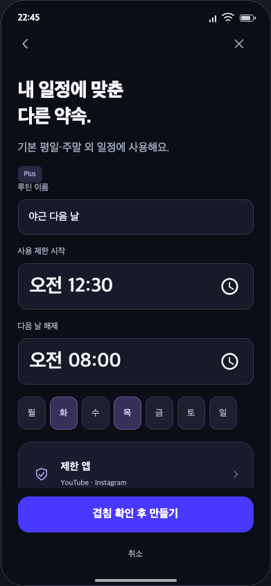
R08 / 루틴복수 루틴을 실제 생성 가능한 입력으로 설계한다.
주 행동 겹침 확인 후 만들기 → R06
예외 이름·요일·범위 검증. Plus 미가입 P01, 충돌 R06.
완료 조건 다음 회차 적용 대상 명시, 기본 루틴 보존.
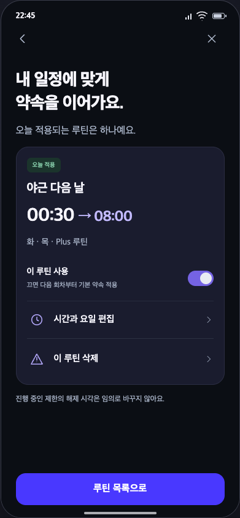
R09 / 루틴추가 루틴의 수정·일시 정지·삭제를 제공한다.
주 행동 루틴 목록으로 → R01
예외 구독 만료와 사용자 정지는 별도 상태.
완료 조건 다음 회차와 진행 중 회차의 영향을 구분.
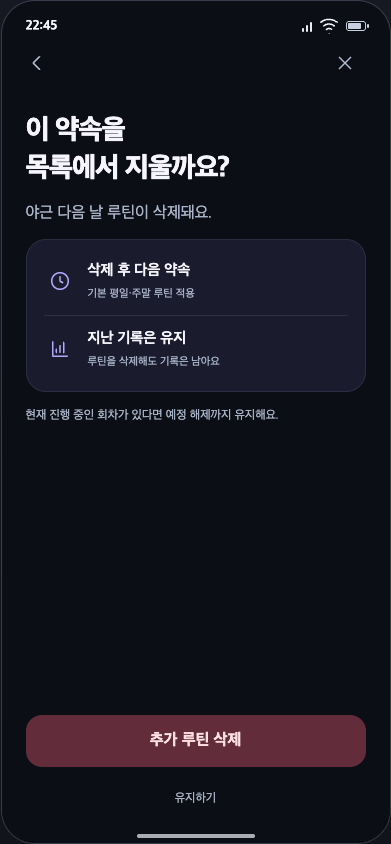
R10 / 루틴삭제 범위와 이후 적용 약속을 알려준다.
주 행동 추가 루틴 삭제 → R01
예외 삭제 실패 시 목록 보존, 요청 중 중복 금지.
완료 조건 기본 루틴·원본 기록·진행 중 해제 보존.
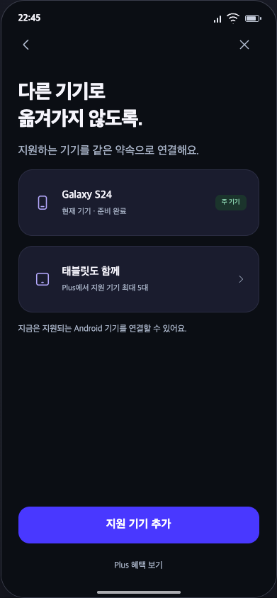
D01 / 기기지원하는 기기를 같은 약속으로 연결해요.
주 행동 지원 기기 추가 → D02
예외 로그인·상품·권한 지원 여부 순서대로 안내. 등록만 완료를 뜻하지 않음.
완료 조건 주 기기와 기기별 실행 준비 상태 표시.
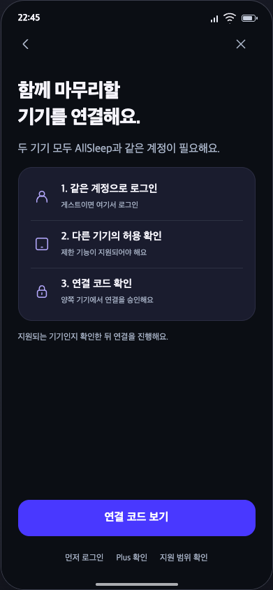
D02 / 기기두 기기 모두 AllSleep과 같은 계정이 필요해요.
주 행동 연결 코드 보기 → D03
예외 지원되지 않는 기기를 이유로 결제 유도 금지. 실제 무료 사용자는 P01 분기.
완료 조건 서로의 계정·기기 확인 후 승인.
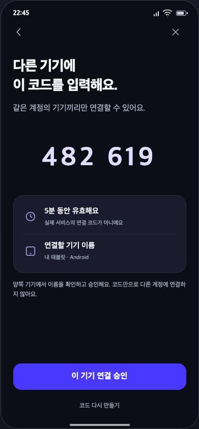
D03 / 기기같은 계정의 기기끼리만 연결할 수 있어요.
주 행동 이 기기 연결 승인 → D06
예외 만료·잘못된 코드·다른 계정·시도 제한·재사용 차단.
완료 조건 코드 일회용, 두 기기 승인, 필요 권한 확인.
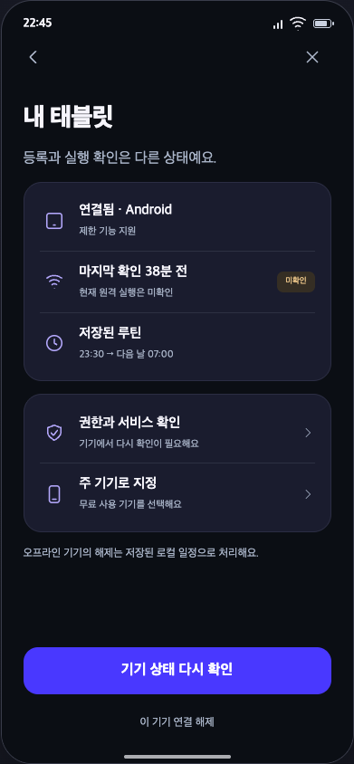
D04 / 기기등록과 실행 확인은 다른 상태예요.
주 행동 기기 상태 다시 확인 → D04
예외 연결 해제 확인 필요. 마지막 확인이 최신 명령 이전이면 실행 완료 금지.
완료 조건 기기별 상태·시간·지원 범위 표시.
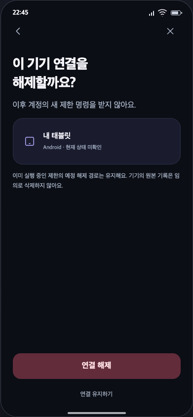
D05 / 기기해제 대상과 영향을 확인한다.
주 행동 연결 해제 → D01
예외 오프라인 기기에 해제 정책 전달 대기 상태 표시. 계정 권한은 즉시 회수.
완료 조건 연결 해제 완료와 원격 반영 대기를 구분.
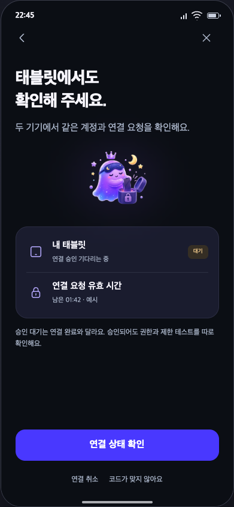
D06 / 기기코드 제출 이후의 실제 승인 상태를 설계한다.
주 행동 연결 상태 확인 → D08
예외 명령과 승인 분리. 타임아웃·취소·다른 계정 거부.
완료 조건 두 기기 확인과 소유권 검증 뒤만 연결 완료.
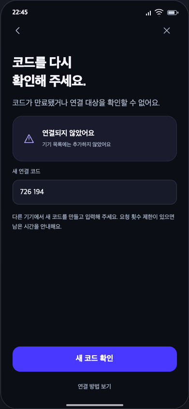
D07 / 기기잘못된 코드에서 입력 맥락을 유지한다.
주 행동 새 코드 확인 → D06
예외 다른 계정·이미 사용·만료·네트워크 실패를 내부적으로 구분.
완료 조건 무효 코드로 기기 등록이나 권한 부여 없음.
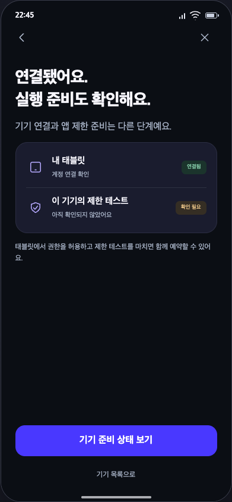
D08 / 기기연결 성공을 제한 실행 성공과 구분한다.
주 행동 기기 준비 상태 보기 → D04
예외 원격 권한을 이 기기에서 허용한 것으로 표시하지 않음.
완료 조건 각 기기의 준비·실행·마지막 확인 시각 별도 표시.
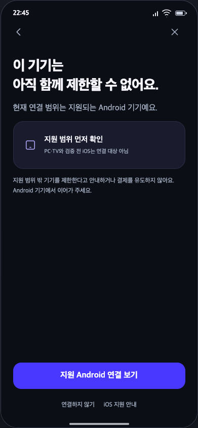
D09 / 기기지원되지 않는 플랫폼의 기대를 정확히 안내한다.
주 행동 지원 Android 연결 보기 → D02
예외 지원 범위 변경은 실기기·플랫폼 승인 확인 뒤 반영.
완료 조건 지원하지 않는 기기의 실행 성공·상품 혜택 표시 금지.
 S01 / 기록
S01 / 기록관찰된 행동의 결과를 확인하고 다음 개선으로 연결한다.
주 행동 주간 비교 보기 → S04
예외 없음 S03, 데이터 부족은 분석 대기, 조회 실패는 기존 기록 유지.
완료 조건 원본 무료, 그래프 축·단위·분모 명확.
 S02 / 기록
S02 / 기록사용 제한을 확인한 구간만 기록해요.
주 행동 기록 목록으로 → S01
예외 관찰 공백·기술 중단·긴급·직접 종료 각각 표시. 시간대·원래 약속 보존.
완료 조건 확인 구간 합산, 임시 사용 제외, 다중 기기 합산 금지.
 S03 / 기록
S03 / 기록사용 제한이 확인되면 여기에 기록이 남아요.
주 행동 오늘 약속 확인 → H01
예외 로딩과 조회 실패를 빈 기록으로 표시하지 않음.
완료 조건 첫 실행 전 0점·빨간 실패 그래프 없음.
 S04 / 기록
S04 / 기록Plus · 분석 가능한 기록 7개 이상에서 제공해요.
주 행동 7일 조정 계획 보기 → S05
예외 Plus 없음은 설명 화면, 데이터 부족은 필요한 기록 수, 비교 분모 표시.
완료 조건 원본 기록은 무료로 유지. 제안의 근거와 한계 표시.
 S05 / 기록
S05 / 기록이번 주는 마무리 준비를 조금 앞당겨요.
주 행동 7일 동안 적용 → R05
예외 기록 부족이면 추정 제안 금지. 기본 일정 변경 전 비교와 동의.
완료 조건 적용값·기간 저장, 원래 설정 복구, 결과 확인.
 S06 / 기록
S06 / 기록충분하지 않은 분석 데이터의 상태를 설명한다.
주 행동 내 기록 보기 → S01
예외 Plus여도 부족하면 추정 비교와 빈 점수 금지.
완료 조건 필요 개수·현재 개수 표시, 무료 원본 접근 유지.
 S07 / 기록
S07 / 기록빈 기록과 조회 실패를 구분한다.
주 행동 다시 불러오기 → S01
예외 캐시가 있으면 출처와 마지막 확인 시각 표시.
완료 조건 오류로 원본 삭제나 0점 생성 없음.
 S08 / 기록
S08 / 기록기존 기록과 관찰 공백의 정직한 표시를 설계한다.
주 행동 원본 기록으로 → S01
예외 공백·기술 중단·행동 지연을 혼합하지 않음.
완료 조건 원본 보존, 분석 제외 이유와 분모 공개.
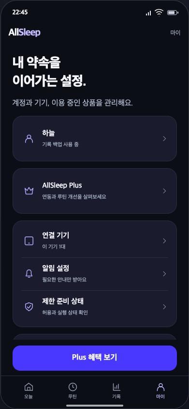
M01 / 마이계정과 기기, 이용 중인 상품을 관리해요.
주 행동 Plus 혜택 보기 → P01
예외 게스트는 계정 카드에 로그인·백업 이유 표시. 구독 활성 여부 정확.
완료 조건 계정·기기·유료·개인정보 항목을 명확히 구분.
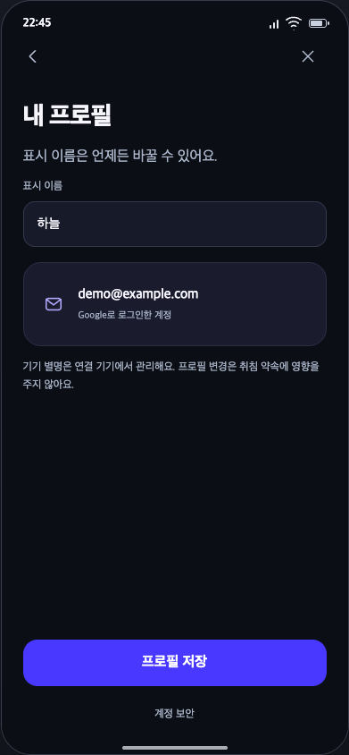
M02 / 마이표시 이름은 언제든 바꿀 수 있어요.
주 행동 프로필 저장 → M01
예외 저장 실패 시 입력 보존. 이름 길이·공백 검증. 이메일 변경은 별도 재인증.
완료 조건 저장 후 실제 계정 응답 반영, 게스트 로그인으로 안내.
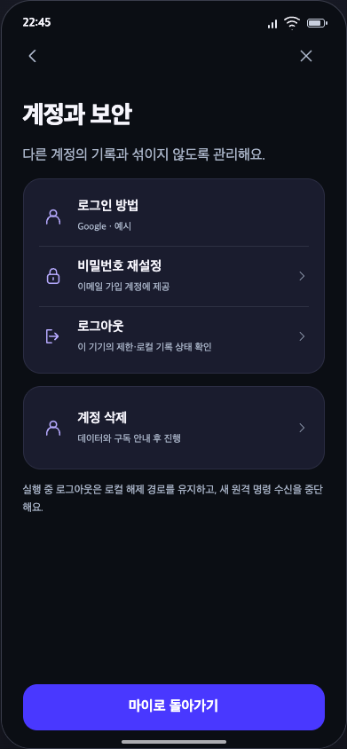
M03 / 마이다른 계정의 기록과 섞이지 않도록 관리해요.
주 행동 마이로 돌아가기 → M01
예외 로그아웃 확인·재인증·세션 만료. 다른 계정 로그인 시 소유권 분리.
완료 조건 진행 중 제한의 해제 경로 보존, 구독 해지와 계정 삭제 구분.
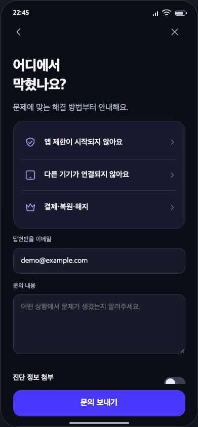
M04 / 마이문제에 맞는 해결 방법부터 안내해요.
주 행동 문의 보내기 → M08
예외 문의 전송은 실제 채널 연결 후. 실패 시 본문 보존, 첨부 범위 미리보기.
완료 조건 문의에 이메일·앱 사용 상세를 자동 첨부하지 않음.
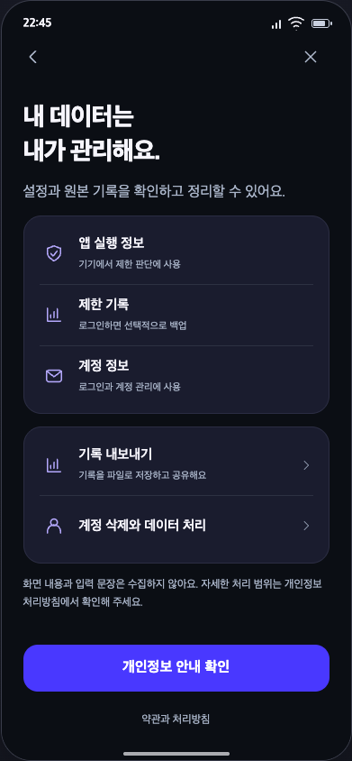
M05 / 마이설정과 원본 기록을 확인하고 정리할 수 있어요.
주 행동 개인정보 안내 확인 → M01
예외 내보내기 준비·완료·실패, 로컬 삭제와 계정 삭제 분리.
완료 조건 실제 저장·전송 범위와 고지 일치.
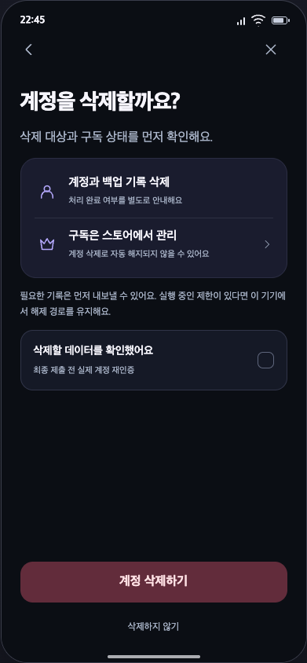
M06 / 마이삭제 범위와 구독 차이를 설명하고 재인증 후 삭제한다.
주 행동 계정 삭제하기 → M13
예외 실제 삭제 요청·접수·완료를 구분. 구독 해지 여부를 탈퇴 차단에 쓰지 않음.
완료 조건 시안 버튼은 삭제하지 않음. 실제 앱은 재인증과 최종 확인 필수.
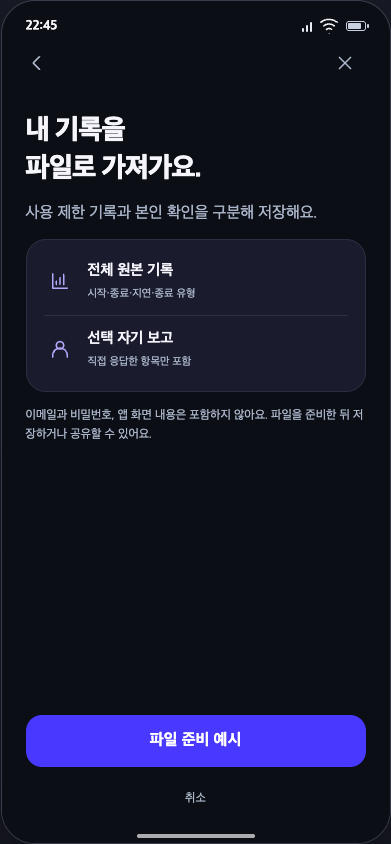
M07 / 마이데이터 범위와 파일 저장 동작을 제공한다.
주 행동 파일 준비 예시 → M11
예외 준비 중·완료·실패 구분, 공유는 OS 시트와 사용자 선택.
완료 조건 실제 파일 생성 확인 후 공유, 내보내기로 원본 삭제하지 않음.
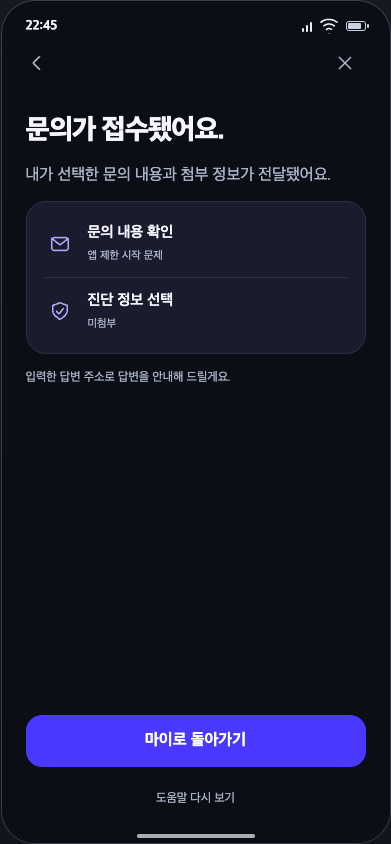
M08 / 마이전송 성공을 확인하고 다음 행동을 안내한다.
주 행동 마이로 돌아가기 → M01
예외 전송 실패 시 본문 보존 후 M04. 접수 완료 응답 후만 성공.
완료 조건 중복 제출 방지, 사용자가 고른 첨부 범위와 일치.
 M09 / 마이
M09 / 마이게스트에게 필요 없는 계정 관리 항목을 숨긴다.
주 행동 로그인하고 기록 백업 → A01
예외 앱 삭제·기기 변경의 로컬 데이터 영향 명시.
완료 조건 로그인 유도에 앞서 무료 기본 사용 유지.
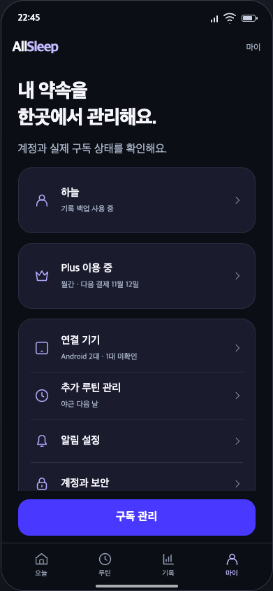
M10 / 마이구독자가 업그레이드 광고 대신 이용 상태를 확인한다.
주 행동 구독 관리 → P05
예외 미확인 기기를 모두 정상이라고 합산하지 않음.
완료 조건 상품 검증 결과와 My 카드 일치.
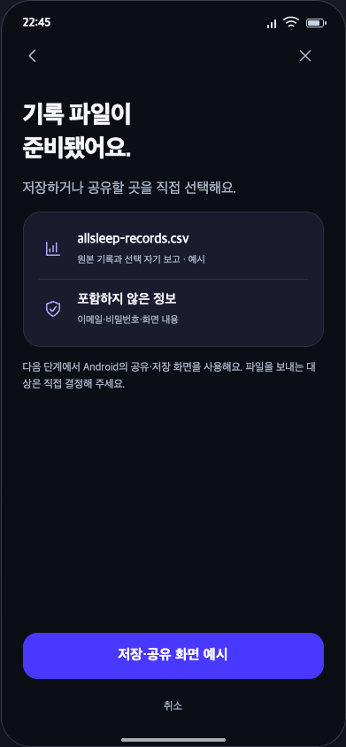
M11 / 마이파일 생성 완료 이후 OS 공유 시트로 연결한다.
주 행동 저장·공유 화면 예시 → M05
예외 생성 실패는 이 화면으로 오지 않음. 취소는 정상 복귀.
완료 조건 실제 파일 내용·범위 검증, 원본 기록 유지.
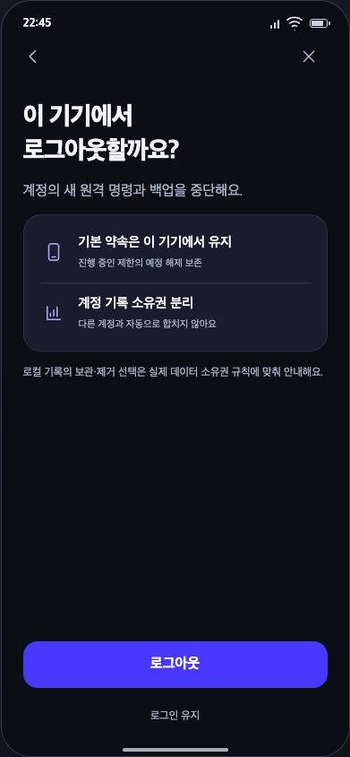
M12 / 마이로그아웃의 로컬·원격 영향을 설명한다.
주 행동 로그아웃 → M09
예외 로그아웃 실패, 계정 전환과 원격 토큰 회수 처리.
완료 조건 로그아웃으로 해제 불능이나 기록 혼합이 생기지 않음.
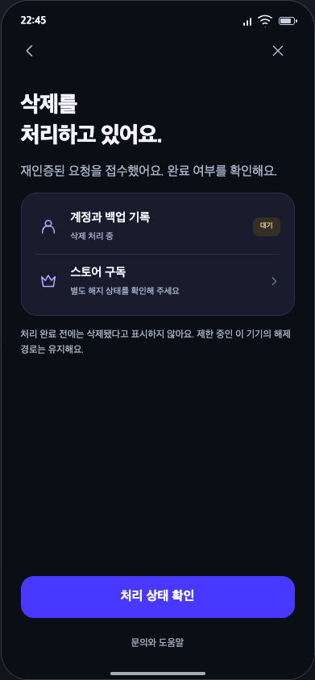
M13 / 마이삭제 요청 접수와 완료를 분리한다.
주 행동 처리 상태 확인 → M14
예외 네트워크 끊김·부분 실패·재시도, 중복 제출 방지.
완료 조건 삭제 완료 응답을 확인한 뒤만 M14.
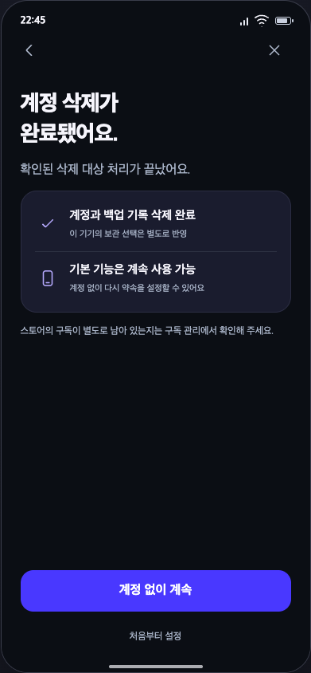
M14 / 마이삭제 완료와 무료 사용 재개를 안내한다.
주 행동 계정 없이 계속 → M09
예외 삭제 대상·완료 시각·로컬 보관 결과 일치.
완료 조건 실제 삭제 확인 없이 완료 표시하지 않음.
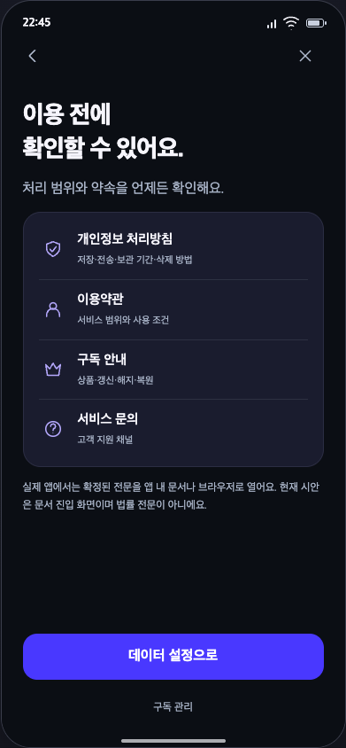
M15 / 마이약관·고지 전문에 접근할 진입점을 설계한다.
주 행동 데이터 설정으로 → M05
예외 오프라인 문서 캐시·개정일 표시. 실제 수집 감사 뒤 문구 확정.
완료 조건 출시 전에 실제 문서 링크와 내용 대조.
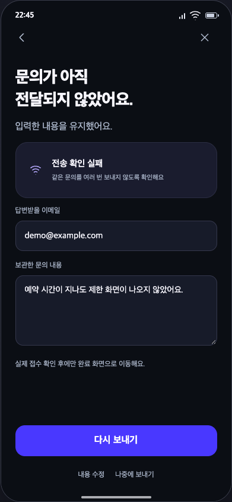
M16 / 마이전송 실패에서도 작성 내용을 보존한다.
주 행동 다시 보내기 → M08
예외 중복 방지 키·연결 복구·진단 첨부 범위 유지.
완료 조건 실제 접수 성공 응답 뒤만 M08.
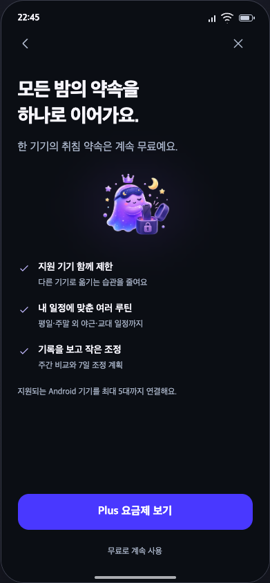
P01 / Plus추가 가치를 문제와 연결하고 무료 경로를 보장한다.
주 행동 Plus 요금제 보기 → P02
예외 지원되지 않는 기능은 실제 상품에서 숨김. 사용자 직접 요청과 자동 노출 구분.
완료 조건 가치 설명은 개인화하되 미구현 기능 판매 금지.
 P02 / Plus
P02 / Plus한 기기의 취침 약속은 계속 무료예요.
주 행동 월 4,900원으로 구독 → P03
예외 가격 실패는 구매 비활성화, 체험 자격별 CTA, 월·연 총액과 갱신 표시.
완료 조건 닫기·무료 경로·복원 항상 제공. 실제 가격 조회 뒤만 구매.
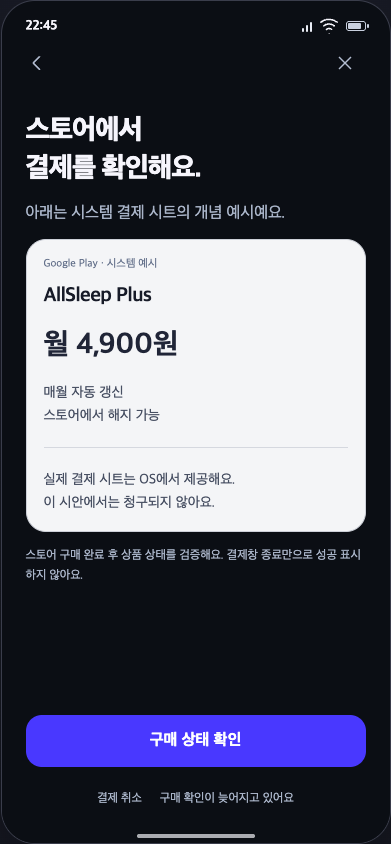
P03 / Plus브랜드 화면과 OS 결제를 구분하고 검증 단계를 명세한다.
주 행동 구매 상태 확인 → P14
예외 사용자 취소는 정상 복귀. 결제 성공·검증 지연·실패 구분.
완료 조건 자체 결제 UI로 시스템 승인처럼 표시하지 않음.
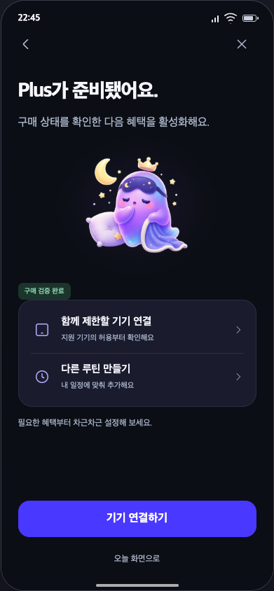
P04 / Plus구매 상태를 확인한 다음 혜택을 활성화해요.
주 행동 기기 연결하기 → D02
예외 검증 전 상품 활성화 금지. 중복 결제 방지, 복원 동일 상태 사용.
완료 조건 구매 직후 다음 유료 가치 설정으로 연결.
현재 상품과 다음 결제 정보를 확인해요.
주 행동 스토어에서 구독 관리 → P06
예외 체험·활성·유예·결제 보류·해지 예정·만료 각각 스토어 검증값 사용.
완료 조건 해지 경로 직접 제공, 계정 삭제와 구독 별도 안내.
확인된 이용 종료일까지 Plus를 사용할 수 있어요.
주 행동 마이로 돌아가기 → M01
예외 취소 상태를 서버 추정으로 확정하지 않음. 추가 유지 설문은 선택.
완료 조건 해지를 막는 반복 팝업 없음, 종료일과 유지 혜택 명확.
원본 기록과 기본 루틴은 그대로 남아요.
주 행동 이 기기로 무료 사용 → H01
예외 유예 상태와 진짜 만료 구분. 강제 잠금 해제·해제 불능 방지.
완료 조건 기록 보존, 다음 회차 정책 적용, 진행 중 해제 유지.
다시 결제하지 말고 기존 구매를 먼저 확인해요.
주 행동 기존 구매 복원하기 → P05
예외 복원 중·복원 없음·다른 계정·오류·완료 각각 표현. 중복 구매 유도 금지.
완료 조건 기존 구매 확인 뒤 상품 활성화. 취소는 실패로 표시하지 않음.
가격 미확인 상태에서 구매를 차단하고 복구 경로를 제공한다.
주 행동 가격 다시 확인 → P02
예외 캐시된 가격과 현재 스토어 조건을 구분, 결제 진입 비활성화.
완료 조건 가격 조회 성공 전 청구 CTA 없음.
실제 체험 비대상 상품의 청구 조건을 명시한다.
주 행동 연 39,000원으로 구독 → P03
예외 기존 구독·지역·계정 자격은 스토어 응답 기반.
완료 조건 0원·체험 CTA로 즉시 유료 상품을 유도하지 않음.
체험 활성 상태에서 종료·가격·해지 경로를 보여준다.
주 행동 스토어에서 체험 관리 → P06
예외 체험 자격 없음 P10, 취소 P06, 만료 P07 분리.
완료 조건 스토어 상태와 기간·청구 금액 일치.
결제 보류를 일반 만료와 구분한다.
주 행동 스토어 결제 상태 확인 → P05
예외 유예의 유효 권한과 account hold의 권한 차이 표시.
완료 조건 확인된 권한에 따른 다음 회차 정책, 결제 오류로 로컬 해제 차단 금지.
복원 실패와 정상 구매 없음 결과를 구분한다.
주 행동 다시 복원 확인 → P08
예외 상품 조회 오류를 구매 없음으로 표시하지 않음.
완료 조건 기존 데이터 보존, 자동 재결제 없음.
스토어 결제 이후 검증 대기 상태를 명시한다.
주 행동 구매 상태 다시 확인 → P04
예외 pending 구매·검증 지연·취소·실패는 서로 다른 원인.
완료 조건 검증 완료 전 P04나 상품 권한 활성화 금지.
이 기기에 저장한 약속은 남아 있어요.
주 행동 이 기기 오늘 화면 → H01
예외 클라우드 실패와 로컬 서비스 실패를 분리. 저장되지 않은 일정은 예약됨 표시 금지.
완료 조건 오프라인 로컬 해제 가능, 원격 성공 표시 금지.
앱 실행 감지 허용이 꺼진 상태예요.
주 행동 허용 다시 확인 → O05
예외 시스템 중단을 사용자 실패로 기록하지 않음. 복귀 후 자동 시작은 별도 사용자 의도 확인.
완료 조건 중단 구간 기록, 실제 허용과 서비스 실행 재확인.
iOS 사용 제한은 별도 지원 확인이 필요해요.
주 행동 지원 안내 확인 → D01
예외 미지원 버전·배포 미승인·허용 거절은 사용 가능 범위만 안내.
완료 조건 실제 지원하지 않는 기기의 혜택을 판매하지 않음.
이 기기의 약속과 기록은 그대로예요.
주 행동 로그인 다시 시도 → A01
예외 취소·계정 제한·네트워크 오류 구분. 비밀번호 상세 노출 금지.
완료 조건 게스트 원본 보존, 인증 완료 전 병합 없음.